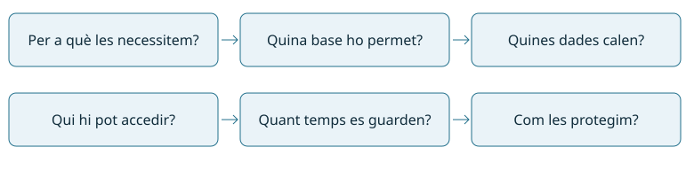
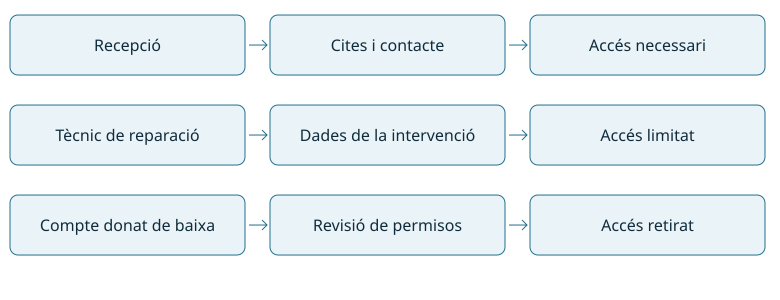
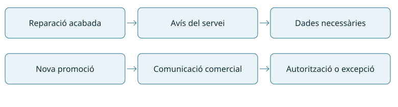
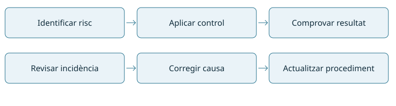

Reconeix la legislació i normativa sobre seguretat i protecció de dades analitzant-ne les repercussions de l’incompliment.
12 hores · 1r de CFGM de Sistemes Microinformàtics i Xarxes. Ordre del mòdul: RA1 → RA2 → RA5 → RA3 → RA4.
A Taller Bit aprendrem a tractar dades de clients, decidir qui hi pot accedir, atendre drets i revisar una web i els seus correus. Treballarem amb casos ficticis i explicacions senzilles.
Quan un tècnic repara un ordinador pot trobar fotografies, correus o documents de clients. Poder obrir un fitxer no vol dir tenir permís per mirar-lo. La protecció de dades estableix com utilitzem informació sobre persones i com protegim els seus drets.
Què és una dada personal?
És informació sobre una persona física identificada o que es pot identificar. Pot ser un nom, una fotografia, una adreça electrònica o un identificador que permeti relacionar registres amb una persona. Una dada no deixa de ser personal perquè sigui pública.
Exemple
Valoració
Nom i telèfon d’un client
Dades personals.
Correu nom.cognom@empresa.example
Identifica una persona treballadora.
Historial de salut
Categoria especial de dades, amb protecció reforçada.
Recompte agregat sense possibilitat raonable de reidentificació
Pot ser informació anònima. Cal valorar el context.
Tractar dades inclou recollir-les, consultar-les, guardar-les, modificar-les, compartir-les i eliminar-les. No cal tenir una gran base de dades: una taula de clients també implica tractament.
Les normes de referència
El RGPD, Reglament (UE) 2016/679, és la norma europea de protecció de dades. A Espanya, la LOPDGDD, Llei orgànica 3/2018, el complementa i regula garanties de drets digitals. La llei de 1999 que pot aparèixer en materials antics no és la norma general vigent.

Abans de recollir dades cal justificar-ne la finalitat i limitar-ne l’ús.
Principis amb un cas senzill
Taller Bit recull el telèfon d’un client per avisar-lo que la reparació està feta. Ha d’explicar aquest ús, demanar només les dades necessàries, mantenir-les correctes, limitar-ne la conservació i protegir-les. També ha de poder demostrar què fa per complir aquestes obligacions.
El consentiment és una base jurídica possible, però no l’única. Per exemple, gestionar una reparació pot requerir dades per executar el contracte, i conservar determinada informació de facturació pot respondre a una obligació legal. No podem aprofitar automàticament aquestes dades per a qualsevol altra finalitat.
Si utilitzem consentiment, ha de ser lliure, informat, específic i inequívoc. Una casella premarcada no serveix. Cal poder retirar-lo amb facilitat. Per a categories especials, a més de la base general, cal una excepció aplicable de l’article 9 del RGPD.
Conseqüències de l’incompliment
Un accés indegut pot perjudicar les persones, obligar a corregir el tractament i comportar sancions o altres responsabilitats. No tots els incidents són delictes. Copiar dades d’un client sense autorització, divulgar secrets o danyar sistemes pot tenir conseqüències jurídiques segons els fets.
A classe treballem amb dades fictícies i entorns autoritzats. L’objectiu és reconèixer el problema i aplicar el procediment, no memoritzar penes ni decidir jurídicament un cas real.
Comprova que ho entens: Podem demanar el DNI complet per a qualsevol consulta a la botiga?Mostra l’explicació
Cal justificar la necessitat. Si per atendre aquella consulta no és necessari, recollir-lo vulneraria la minimització de dades.
Decideix les finalitats i els mitjans del tractament.
Taller Bit respecte de la gestió dels seus clients.
Encarregat del tractament
Tracta dades per compte del responsable, segons instruccions.
Proveïdor que allotja la base de clients per encàrrec del taller.
Delegat de protecció de dades (DPD)
Informa, assessora i supervisa el compliment amb independència.
DPD quan la seva designació és obligatòria o voluntària.
Autoritat de control
Supervisa i atén reclamacions en el seu àmbit competencial.
AEPD o APDCAT, segons l’entitat i el tractament.
Un treballador que consulta dades sota l’autoritat de l’empresa no es converteix per això en encarregat extern. El proveïdor encarregat necessita un acord amb les condicions de l’article 28 del RGPD. El DPD no substitueix la responsabilitat de l’organització ni és obligatori en totes les petites empreses.
Control d’accés: només allò necessari
Recepció pot necessitar telèfons i cites, però no totes les dades de comptabilitat. Cada persona utilitza el seu compte; s’assignen permisos per funció i es revisen quan canvia de lloc o deixa l’empresa. Els comptes compartits dificulten saber qui ha accedit a la informació.
El tècnic aplica les autoritzacions rebudes, bloqueja la sessió quan s’allunya, protegeix còpies i registra incidències. Els registres d’accés també poden contenir dades personals: cal limitar qui els consulta i quant temps es conserven.

Els permisos depenen de les tasques autoritzades, no només de poder entrar al sistema.
Els drets de les persones
Dret
Exemple didàctic
Accés
Saber si es tracten les meves dades i obtenir-ne una còpia amb la informació corresponent.
Rectificació
Corregir una adreça incorrecta.
Supressió
Demanar que s’eliminin dades quan sigui procedent.
Oposició
Oposar-me a determinats usos; per exemple, màrqueting directe.
Limitació
Demanar que es limiti el tractament en els supòsits previstos.
Portabilitat
Rebre determinades dades facilitades en format estructurat si es compleixen les condicions legals.
També hi ha protecció davant determinades decisions basades únicament en tractaments automatitzats. Els drets tenen condicions i límits: una petició de supressió no obliga a destruir factures que s’han de conservar legalment. La portabilitat no és sinònim del dret d’accés.
Atendre una sol·licitud pas a pas
Registrar la recepció i identificar quin dret es demana.
Verificar la identitat de manera proporcionada; no demanar automàticament més dades de les necessàries.
Traslladar-la al responsable o al canal establert. El tècnic no lliura dades per iniciativa pròpia.
Localitzar la informació i revisar si afecta drets de tercers.
Respondre per un canal segur. Com a regla general, el termini és un mes; es pot ampliar dos mesos més per complexitat o nombre de peticions, informant-ne dins del primer mes.
Documentar la resposta o els motius de la denegació i les vies de reclamació.
Exemple: si una persona demana les seves reparacions, li facilitem la informació que li correspon, no un Excel amb tots els clients.
Si enviem dades a qui no toca
Avisa immediatament pel canal intern i registra què ha passat, sense difondre encara més les dades. El responsable valora el risc i les notificacions: a l’autoritat, sense dilació indeguda i si és possible en 72 hores des que en té constància, llevat que sigui improbable que hi hagi risc per als drets i llibertats. La comunicació a les persones afectades correspon, en general, quan és probable un risc alt. No tots els incidents requereixen les mateixes notificacions.
Comprova que ho entens: El client demana les seves dades. Li podem enviar tota la base de dades?Mostra l’explicació
No. Cal facilitar la informació que li correspon, verificar la identitat i protegir les dades de tercers.
La LSSI-CE, Llei 34/2002, regula serveis de la societat de la informació i comerç electrònic. Una botiga en línia és un exemple clar. Un servei gratuït per a l’usuari també pot tenir activitat econòmica, com un web finançat amb publicitat.
Què ha de trobar una persona al web?
Quan la LSSI és aplicable, el prestador ha de facilitar informació identificativa i de contacte, i la resta de dades exigibles segons el cas. En una contractació electrònica ha d’informar dels passos, les condicions, els mitjans per corregir errors i les altres obligacions aplicables. El RGPD i la normativa de consum poden aplicar-se alhora.
Element
Què explica
Error habitual
Avís legal
Qui presta el servei i com contactar-hi.
Copiar un avís d’una altra empresa.
Informació de privacitat
Finalitats, bases, destinataris, drets i altres dades del tractament.
Dir només «complim la llei».
Condicions de compra
Preus, procés i condicions de contractació.
Amagar despeses o informació essencial.
Gestió de cookies
Quines tecnologies s’utilitzen i per a què.
Activar publicitat abans del consentiment quan és necessari.
Correu comercial i correu de servei
Un avís que la reparació està acabada respon al servei contractat. Un correu que anuncia una promoció és una comunicació comercial. La regla general exigeix que la publicitat per correu hagi estat sol·licitada o autoritzada prèviament.
Hi ha una excepció per relació contractual prèvia quan les dades s’han obtingut lícitament i s’anuncien productes o serveis de la mateixa empresa similars als contractats. Cal oferir oposició senzilla i gratuïta en recollir les dades i en cada missatge. Disposar d’una adreça publicada a Internet no autoritza automàticament a enviar-li publicitat.

Cal diferenciar l’avís de servei de la publicitat i comprovar si es pot enviar.
Cookies amb un exemple
Una cookie que manté el carret de compra pot ser estrictament necessària per al servei sol·licitat. Les cookies de publicitat habitualment requereixen consentiment previ. Cal valorar-ne la finalitat real.
Per a cookies no exemptes, cal informar i oferir una elecció efectiva. Acceptar i rebutjar s’han de presentar de manera clara i amb una facilitat comparable; continuar navegant no és una acceptació vàlida. També s’ha de poder retirar el consentiment. El navegador no ha d’activar les cookies que necessiten consentiment abans de tenir-lo.
Correu segur al taller
Comprova el destinatari abans d’enviar i revisa l’autocompleció.
Adjunta només les dades necessàries; evita llistats sencers si només cal una fitxa.
Per missatges col·lectius, evita revelar adreces innecessàriament; utilitza CCO quan correspongui.
Utilitza els canals de compartició autoritzats per a documents sensibles i revisa permisos.
Si envies el missatge a qui no toca, segueix el procediment d’incidències.
La CCO oculta destinataris entre si; no xifra els adjunts ni converteix en lícita una campanya publicitària.
Comprova que ho entens: Si el correu acaba amb «dona’t de baixa», ja podem enviar publicitat a qualsevol persona?Mostra l’explicació
No. El mecanisme de baixa és necessari, però no substitueix l’autorització prèvia o una excepció legal aplicable.
Una organització necessita mesures tècniques i una manera de gestionar-les: qui revisa permisos, qui comprova còpies i com es respon a una incidència. Un document guardat en una carpeta no prova, per si sol, que la seguretat funcioni.
Llei, norma i procediment
Referència
Què és
Aplicació
RGPD i LOPDGDD
Normativa jurídica de protecció de dades.
Obligacions quan el tractament entra en el seu àmbit.
LSSI-CE
Normativa jurídica de serveis electrònics.
Obligacions segons el servei i la seva activitat.
ISO/IEC 27001:2022
Norma de requisits d’un sistema de gestió de seguretat de la informació.
Permet organitzar riscos, controls i millora. Pot ser objecte de certificació.
Esquema Nacional de Seguretat (ENS)
Marc regulat pel Reial decret 311/2022.
Aplicable al sector públic i als proveïdors privats en els supòsits que estableix el seu àmbit.
Procediment intern
Instrucció concreta de l’organització.
Per exemple, donar de baixa un compte i comprovar que perd l’accés.
ISO/IEC 27001 no és una llei obligatòria per a qualsevol taller. Un contracte pot exigir determinades normes. Tenir un certificat tampoc demostra automàticament el compliment de totes les lleis: cal revisar-ne l’abast i el que realment s’aplica.
Gestionar un risc
Actiu: fitxer de clients. Amenaça: una persona que ja no treballa al taller conserva accés. Conseqüència: consulta o còpia no autoritzada. Mesura: retirada de permisos quan finalitza la relació. Evidència: registre de baixa i prova d’accés denegat.

La gestió de seguretat relaciona el risc amb una mesura i una comprovació.
Això es repeteix amb les còpies de seguretat, les actualitzacions, els accessos i les incidències. Cal assignar responsables, dates de revisió i evidències útils, sense acumular dades personals innecessàries.
Comparació pràctica
El taller A diu «tenim còpies», però no sap quan es van provar. El taller B documenta què copia, qui ho revisa i quan ha comprovat una restauració. El segon aporta evidència verificable, encara que això no equivalgui a una certificació formal.
Per estudiar aquest bloc, relaciona cada obligació amb una mesura concreta: protegir dades amb permisos; respondre drets amb un circuit de peticions; evitar enviaments indeguts amb comprovacions de correu. Explica també què no resol cada mesura.
Comprova que ho entens: Tenir ISO 27001 substitueix el RGPD?Mostra l’explicació
No. Són referències diferents. Un sistema de gestió ajuda a organitzar la seguretat, però les obligacions legals s’han de complir igualment.
5.a Descriu la legislació sobre protecció de dades de caràcter personal.
5.b Determina la necessitat de controlar l'accés a la informació personal emmagatzemada.
5.c Identifica les figures legals que intervenen en el tractament i manteniment dels fitxers de dades.
5.d Contrasta l'obligació de posar a disposició de les persones les dades personals que els concerneixen.
5.e Descriu la legislació actual sobre els serveis de la societat de la informació i comerç electrònic.
5.f Contrasta les normes sobre gestió de seguretat de la informació.
*5.g · Aplica els procediments establerts en la competència digital A2C5 (2.5 Netiquette) utilitzant els equipaments, eines i aplicacions informàtiques adients, amb criteris de qualitat.
*5.h · Aplica els procediments establerts en la competència digital A2C6 (2.6 Gestió de la identitat digital) utilitzant els equipaments, eines i aplicacions informàtiques adients, amb criteris de qualitat.
5. Compliment de la legislació i de les normes sobre seguretat
Contingut
Descripció
5.1
Legislació sobre protecció de dades.
5.2
Legislació sobre els serveis de la societat de la informació i correu electrònic.
Dos treballs amb el mateix pes dins Pt. Es mantenen els pesos de Programació i avaluació: Pt 20%, Pe 70% i Gr 10%, amb les notes mínimes i els requisits de lliurament establerts. Les rúbriques següents són la proposta per valorar aquests treballs.
P5.1 · Dades personals a Taller Bit
5.a–5.d · Contingut 5.1 · 2 hores
Cas: el taller guarda noms, telèfons, reparacions i factures. Recepció i tècnics comparteixen un únic compte. Un proveïdor allotja la base de dades. Una clienta demana accés a les seves dades i que es corregeixi el telèfon.
Identifica les dades personals i proposa quines són necessàries per a cada finalitat.
Relaciona cada ús amb una base jurídica possible i explica què faltaria comprovar.
Identifica interessada, responsable i encarregat. Explica per què el tècnic no és automàticament el responsable del tractament.
Dissenya una taula de permisos per a recepció, tècnics i comptabilitat. Justifica un accés que s’ha de denegar.
Redacta el procediment de resposta a la petició, incloent identitat, termini, dades que es lliuren i protecció de tercers.
Lliurament: dossier breu amb taula de dades/finalitats, rols, permisos i esborrany de resposta. No s’envia cap missatge real.
Distribució: 20 min per al cas i la normativa, 25 min per als rols, 25 min per als permisos, 35 min per als drets i 15 min de revisió.
Rúbrica sobre 10: dades i normativa (2), rols (2), accessos justificats (3), resposta als drets (3).
P5.2 · Revisió d’una web i del correu comercial
5.e–5.f · Contingut 5.2 · 2 hores
Cas: una botiga en línia no identifica el venedor, activa cookies publicitàries abans de preguntar, compra una llista de correus i afirma que tenir ISO 27001 ja li permet utilitzar totes les dades.
Identifica quatre problemes i relaciona’ls amb la norma o guia corresponent.
Proposa què hauria d’incloure la informació del prestador i què correspon a la informació de privacitat.
Compara un avís de reparació amb una promoció. Explica quines condicions cal comprovar abans d’enviar publicitat.
Descriu un sistema de cookies que permeti una elecció efectiva i que respecti el resultat de la tria.
Compara LSSI, RGPD, ISO 27001 i ENS: finalitat, àmbit i una evidència de compliment o aplicació. No pressuposis que totes s’apliquen igual al taller.
Prepara un correu fictici per a diversos clients sense exposar-ne les adreces i explica què no resol la CCO.
Lliurament: taula problema/norma/correcció/evidència i esborrany de correu. No cal publicar una web ni enviar correus.
Distribució: 30 min per a la revisió, 25 min per al correu, 20 min per a cookies, 30 min per a normes i 15 min de comprovació.
Rúbrica sobre 10: diagnòstic (3), correccions justificades (3), comparació de normes (3), claredat i fonts (1).
Competències digitals vinculades
*5.g · 2.5 Netiquette:CD2 · Comunicació respectuosa. *5.h · 2.6 Gestió de la identitat digital:CD3 · Identitat digital. Les activitats tenen lliurament i validació separats. La planificació reserva temps per presentar-les; el desenvolupament autònom és el que indica el seu apartat.
Pe5 · Prova individual d’una hora
Casos breus per identificar dades i normativa, justificar permisos, distingir rols, respondre una petició de drets, revisar una comunicació comercial i comparar normes de seguretat. Es comproven 5.a–5.f. Els criteris digitals s’avaluen amb CD2 i CD3.
Abans o el mateix dia de Pe5 cal lliurar el resum-esquema manuscrit, segons la programació. A la recuperació, el docent pot establir treballs previs que s’han de lliurar amb qualitat i validar per poder fer l’examen.